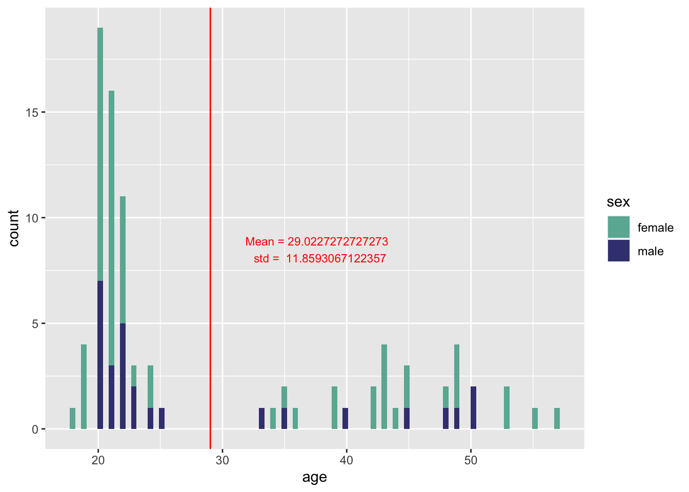

Oblique case gender of indeclinables
Preparing the data
results <- read.pcibex("results.csv")
# get rid of uninformative columns and rows
results <- results %>% filter(Label == "sprt" | Label == "judgement")
results <- filter(results, PennElementType != "PennController")
results <- dplyr::select(.data = results, -c(EventTime, Comments, Controller.name))# we allowed few typos in the stimuli, mark observations with them
results <- results %>% mutate(typo = ifelse(
str_detect(Parameter, "(пенсе|бесопкоит|вегетерианцев|хоязйству)") |
str_detect(Sentence..or.sentence.MD5., "(пенсе|бесопкоит|вегетерианцев|хоязйству)"),
1, 0
))# we have a few tasks in the dataset: sprt, comprehension questions, acceptability judgement
# let's divide the observations into 3 datasets for convenience
sprt <- results %>% filter(Label == "sprt")
judgement <- results %>% filter(Label == "judgement")
rm(results) # remove the original dataset
comprehension_questions <- sprt %>% filter(PennElementName == "Question")
sprt <- sprt %>% filter(PennElementType == "Controller-DashedSentence")Demographic data
####### demographic data overview
demog <- sprt %>% distinct(Results.reception.time, MD5.hash.of.participant.s.IP.address, sex, age)
# кто-то один не указал возраст :-(
demog <- na.omit(demog)
demog %>%
ggplot(aes(x = age, fill = sex)) +
geom_histogram(bins = nrow(demog)) +
geom_vline(xintercept = mean(demog$age), col = "red", lwd = .5) +
scale_fill_manual(values=c("#69b3a2", "#404080")) +
annotate("text",
x = mean(demog$age) * 1.3, y = 8.5,
label = paste("Mean =", mean(demog$age), "\n std = ", sd(demog$age)),
col = "red",
size = 3
) +
ylab("count")
Comprehension questions
######## check comprehension question stats
comprehension_questions <- comprehension_questions %>%
rename(RT = Newline., correct = Reading.time)
comprehension_questions$correct <- as.numeric(comprehension_questions$correct)
# 32 is total number of questions
comprehension_questions %>%
group_by(Results.reception.time, MD5.hash.of.participant.s.IP.address) %>%
summarise(n_correct = sum(correct), share_correct = sum(correct) / 32) %>%
arrange(n_correct)# A tibble: 92 × 4
# Groups: Results.reception.time [92]
Results.reception.time MD5.hash.of.participant.s.IP.address n_correct share…¹
<int> <chr> <dbl> <dbl>
1 1678180237 d49c679192a0a22bec3ec6ead5f37ff3 28 0.875
2 1678352462 27f3cc7e1a676034e04714d86ec708b9 28 0.875
3 1678135178 a60868e03d4eaf0c0f3503e2c558f918 29 0.906
4 1678137776 4a7eafcdbb84d26d0b2964ac0aa528a9 29 0.906
5 1678381937 b3197739e4b133fc95a88778a770d20b 29 0.906
6 1678383226 b3197739e4b133fc95a88778a770d20b 29 0.906
7 1678131799 9c9ec2e33b2d6eb95e71551cbc88b329 30 0.938
8 1678139741 45f5c1924facb98cc219b7acfe7c7abd 30 0.938
9 1678180551 f4be9f43c323920ffa418e993ac801c7 30 0.938
10 1678184786 b2c01a1b7c4563b3598ba668ceec99fd 30 0.938
# … with 82 more rows, and abbreviated variable name ¹share_correctSelf-paced reading task
####### reading time in sprt
sprt <- sprt %>%
filter(type != "filler") %>%
rename(region = Parameter, rt1 = Reading.time)
# some really strange bug but it concerns only the final region, so doesn't really matter
sprt <- sprt %>% filter(rt1 != "NaN")
## delete stimuli with typos
sprt <- sprt %>% filter(typo == 0)# statistics on RT
sprt <- sprt %>% mutate_at(c("region", "rt1"), as.numeric)
sprt %>% summarise(mean(rt1), sd(rt1), min(rt1), max(rt1)) mean(rt1) sd(rt1) min(rt1) max(rt1)
1 565.6736 966.5092 23 100048clean_outliers <- function(x) {
y <- droplevels(subset(x, x$rt1 > 100 & x$rt1 < 3000))
y <- droplevels(subset(y, y$rt1 <= mean(y$rt1) + 2.5 * sd(y$rt1) & y$rt1 >= mean(y$rt1) - 2.5 * sd(y$rt1)))
return(y)
}
# let's change "gender" feature notation: making fem vs non_fem
sprt <- sprt %>% mutate(gender = ifelse(gender == "n" | gender == "m", "non_fem", "fem"))
# clean the data
outliers <- split(sprt, paste(sprt$region, sprt$case, sprt$gender))
outliers <- lapply(outliers, clean_outliers)
clean_data <- do.call("rbind", outliers)
# 24*9*0.85 = 183.6 #24 stimuli, 9 regions each
clean_data %>%
group_by(Results.reception.time, MD5.hash.of.participant.s.IP.address) %>%
filter(n() > 183) -> clean_data # exclude answers of people, for whom we deleted more than 15% of data
clean_data %>%
distinct(Results.reception.time, MD5.hash.of.participant.s.IP.address) %>%
nrow()[1] 81### visualize
# -u nouns
ggplot(clean_data %>% filter(type %in% c(
"acc_fem", "acc_masc_or_neut",
"nom_fem_u", "nom_masc_or_neut_u"
)) %>%
group_by(region, type) %>%
summarise(mean = mean(rt1), std = sd(rt1))) +
geom_line(aes(x = region, y = mean, col = type)) +
scale_x_continuous(name = "word number", breaks = c(1:9)) +
ylab("Mean reading time") +
theme_bw()
#-e nouns
ggplot(clean_data %>% filter(type %in% c(
"dat_fem", "dat_masc_or_neut",
"nom_fem_e", "nom_masc_or_neut_e"
)) %>%
group_by(region, type) %>%
summarise(mean = mean(rt1), std = sd(rt1))) +
geom_line(aes(x = region, y = mean, col = type)) +
scale_x_continuous(name = "word number", breaks = c(1:9)) +
ylab("Mean reading time") +
theme_bw()
SPRT RT regressions by region
sprt_regression <- function(data_set, region_N){
lmer(
rt1 ~ type + (1 | MD5.hash.of.participant.s.IP.address) + (1 | noun),
data_set %>% filter(region == as.character(region_N))
) %>%
summary(.)
}print("-u")[1] "-u"data_u <- clean_data %>% filter(type %in% c(
"acc_fem", "acc_masc_or_neut",
"nom_fem_u", "nom_masc_or_neut_u"
))
data_u$type <- as.factor(data_u$type) %>% relevel(., ref = "nom_masc_or_neut_u")
# На1 ветке2 мы3 увидели4 какаду5, сверкающего6 своим7 ярким8 оперением9.
for (N in 6:9) print(sprt_regression(data_u, N))Linear mixed model fit by REML ['lmerMod']
Formula: rt1 ~ type + (1 | MD5.hash.of.participant.s.IP.address) + (1 |
noun)
Data: data_set %>% filter(region == as.character(region_N))
REML criterion at convergence: 12856
Scaled residuals:
Min 1Q Median 3Q Max
-2.1927 -0.5714 -0.1541 0.3698 4.3786
Random effects:
Groups Name Variance Std.Dev.
MD5.hash.of.participant.s.IP.address (Intercept) 43467 208.5
noun (Intercept) 2034 45.1
Residual 47106 217.0
Number of obs: 933, groups: MD5.hash.of.participant.s.IP.address, 75; noun, 12
Fixed effects:
Estimate Std. Error t value
(Intercept) 542.43 30.99 17.502
typeacc_fem 60.30 20.26 2.977
typeacc_masc_or_neut 10.31 20.23 0.510
typenom_fem_u 46.87 20.41 2.296
Correlation of Fixed Effects:
(Intr) typcc_ typ___
typeacc_fem -0.335
typcc_msc__ -0.334 0.510
typenom_fm_ -0.333 0.513 0.505
Linear mixed model fit by REML ['lmerMod']
Formula: rt1 ~ type + (1 | MD5.hash.of.participant.s.IP.address) + (1 |
noun)
Data: data_set %>% filter(region == as.character(region_N))
REML criterion at convergence: 12284.4
Scaled residuals:
Min 1Q Median 3Q Max
-2.4049 -0.5637 -0.1865 0.3517 4.7856
Random effects:
Groups Name Variance Std.Dev.
MD5.hash.of.participant.s.IP.address (Intercept) 17735.9 133.18
noun (Intercept) 334.6 18.29
Residual 22941.1 151.46
Number of obs: 942, groups: MD5.hash.of.participant.s.IP.address, 75; noun, 12
Fixed effects:
Estimate Std. Error t value
(Intercept) 463.61 19.11 24.261
typeacc_fem 52.42 14.03 3.737
typeacc_masc_or_neut 10.98 13.97 0.786
typenom_fem_u 16.88 14.17 1.192
Correlation of Fixed Effects:
(Intr) typcc_ typ___
typeacc_fem -0.374
typcc_msc__ -0.374 0.509
typenom_fm_ -0.370 0.507 0.503
Linear mixed model fit by REML ['lmerMod']
Formula: rt1 ~ type + (1 | MD5.hash.of.participant.s.IP.address) + (1 |
noun)
Data: data_set %>% filter(region == as.character(region_N))
REML criterion at convergence: 11836.1
Scaled residuals:
Min 1Q Median 3Q Max
-2.3568 -0.5263 -0.1298 0.3208 7.1321
Random effects:
Groups Name Variance Std.Dev.
MD5.hash.of.participant.s.IP.address (Intercept) 12364.5 111.20
noun (Intercept) 164.6 12.83
Residual 12954.7 113.82
Number of obs: 948, groups: MD5.hash.of.participant.s.IP.address, 75; noun, 12
Fixed effects:
Estimate Std. Error t value
(Intercept) 429.681 15.328 28.032
typeacc_fem 12.279 10.494 1.170
typeacc_masc_or_neut 1.999 10.461 0.191
typenom_fem_u 12.112 10.610 1.142
Correlation of Fixed Effects:
(Intr) typcc_ typ___
typeacc_fem -0.348
typcc_msc__ -0.348 0.508
typenom_fm_ -0.345 0.506 0.502
Linear mixed model fit by REML ['lmerMod']
Formula: rt1 ~ type + (1 | MD5.hash.of.participant.s.IP.address) + (1 |
noun)
Data: data_set %>% filter(region == as.character(region_N))
REML criterion at convergence: 12066.7
Scaled residuals:
Min 1Q Median 3Q Max
-2.6390 -0.5201 -0.1552 0.3239 5.4379
Random effects:
Groups Name Variance Std.Dev.
MD5.hash.of.participant.s.IP.address (Intercept) 17467.3 132.16
noun (Intercept) 530.2 23.03
Residual 22308.7 149.36
Number of obs: 927, groups: MD5.hash.of.participant.s.IP.address, 74; noun, 12
Fixed effects:
Estimate Std. Error t value
(Intercept) 484.365 19.487 24.856
typeacc_fem 6.974 13.932 0.501
typeacc_masc_or_neut -12.372 13.918 -0.889
typenom_fem_u -8.293 14.109 -0.588
Correlation of Fixed Effects:
(Intr) typcc_ typ___
typeacc_fem -0.365
typcc_msc__ -0.363 0.506
typenom_fm_ -0.360 0.508 0.500print("-e")[1] "-e"data_e <- clean_data %>% filter(type %in% c(
"dat_fem", "dat_masc_or_neut",
"nom_fem_e", "nom_masc_or_neut_e"
))
data_e$type <- as.factor(data_e$type) %>% relevel(., ref = "nom_masc_or_neut_e")
for (N in 6:9) print(sprt_regression(data_e, N))Linear mixed model fit by REML ['lmerMod']
Formula: rt1 ~ type + (1 | MD5.hash.of.participant.s.IP.address) + (1 |
noun)
Data: data_set %>% filter(region == as.character(region_N))
REML criterion at convergence: 12781.5
Scaled residuals:
Min 1Q Median 3Q Max
-2.3725 -0.5494 -0.1469 0.3408 4.8012
Random effects:
Groups Name Variance Std.Dev.
MD5.hash.of.participant.s.IP.address (Intercept) 40149 200.37
noun (Intercept) 1350 36.74
Residual 43627 208.87
Number of obs: 933, groups: MD5.hash.of.participant.s.IP.address, 75; noun, 12
Fixed effects:
Estimate Std. Error t value
(Intercept) 540.62 28.91 18.703
typedat_fem 40.35 19.47 2.072
typedat_masc_or_neut 23.04 19.33 1.192
typenom_fem_e 32.54 19.40 1.677
Correlation of Fixed Effects:
(Intr) typdt_ typ___
typedat_fem -0.332
typdt_msc__ -0.332 0.494
typenom_fm_ -0.333 0.498 0.494
Linear mixed model fit by REML ['lmerMod']
Formula: rt1 ~ type + (1 | MD5.hash.of.participant.s.IP.address) + (1 |
noun)
Data: data_set %>% filter(region == as.character(region_N))
REML criterion at convergence: 12204.5
Scaled residuals:
Min 1Q Median 3Q Max
-2.1450 -0.5425 -0.1596 0.2986 5.8424
Random effects:
Groups Name Variance Std.Dev.
MD5.hash.of.participant.s.IP.address (Intercept) 17391.3 131.88
noun (Intercept) 296.7 17.22
Residual 22261.8 149.20
Number of obs: 938, groups: MD5.hash.of.participant.s.IP.address, 75; noun, 12
Fixed effects:
Estimate Std. Error t value
(Intercept) 458.462 18.767 24.429
typedat_fem 37.325 13.901 2.685
typedat_masc_or_neut 7.286 13.763 0.529
typenom_fem_e 32.418 13.785 2.352
Correlation of Fixed Effects:
(Intr) typdt_ typ___
typedat_fem -0.365
typdt_msc__ -0.365 0.493
typenom_fm_ -0.367 0.499 0.497
Linear mixed model fit by REML ['lmerMod']
Formula: rt1 ~ type + (1 | MD5.hash.of.participant.s.IP.address) + (1 |
noun)
Data: data_set %>% filter(region == as.character(region_N))
REML criterion at convergence: 11857.4
Scaled residuals:
Min 1Q Median 3Q Max
-2.6776 -0.5671 -0.1551 0.3357 4.6138
Random effects:
Groups Name Variance Std.Dev.
MD5.hash.of.participant.s.IP.address (Intercept) 14930.1 122.19
noun (Intercept) 632.4 25.15
Residual 14101.4 118.75
Number of obs: 942, groups: MD5.hash.of.participant.s.IP.address, 75; noun, 12
Fixed effects:
Estimate Std. Error t value
(Intercept) 434.15 17.68 24.551
typedat_fem 20.88 11.03 1.893
typedat_masc_or_neut 14.03 10.97 1.279
typenom_fem_e 21.33 11.00 1.939
Correlation of Fixed Effects:
(Intr) typdt_ typ___
typedat_fem -0.311
typdt_msc__ -0.310 0.497
typenom_fm_ -0.312 0.504 0.498
Linear mixed model fit by REML ['lmerMod']
Formula: rt1 ~ type + (1 | MD5.hash.of.participant.s.IP.address) + (1 |
noun)
Data: data_set %>% filter(region == as.character(region_N))
REML criterion at convergence: 11841.7
Scaled residuals:
Min 1Q Median 3Q Max
-3.1153 -0.5301 -0.1404 0.3547 5.1368
Random effects:
Groups Name Variance Std.Dev.
MD5.hash.of.participant.s.IP.address (Intercept) 19934.6 141.19
noun (Intercept) 825.8 28.74
Residual 19617.0 140.06
Number of obs: 917, groups: MD5.hash.of.participant.s.IP.address, 74; noun, 12
Fixed effects:
Estimate Std. Error t value
(Intercept) 480.02 20.64 23.251
typedat_fem 30.03 13.22 2.271
typedat_masc_or_neut 17.09 13.13 1.302
typenom_fem_e 13.57 13.23 1.026
Correlation of Fixed Effects:
(Intr) typdt_ typ___
typedat_fem -0.322
typdt_msc__ -0.321 0.502
typenom_fm_ -0.321 0.506 0.501Acceptability judgement
####### Judgements
judgement <- judgement %>% filter(Value != "NULL")
judgement <- judgement %>% mutate(gender = ifelse(gender == "n" | gender == "m", "non_fem", "fem"))
judgement %>%
group_by(type) %>%
summarise(average = mean(as.numeric(Value)), std = sd(as.numeric(Value)))# A tibble: 8 × 3
type average std
<chr> <dbl> <dbl>
1 acc_fem 2.19 1.44
2 acc_masc_or_neut 3.97 1.40
3 dat_fem 1.73 1.19
4 dat_masc_or_neut 3.99 1.38
5 nom_fem_e 1.67 1.13
6 nom_fem_u 2.10 1.36
7 nom_masc_or_neut_e 4.29 1.19
8 nom_masc_or_neut_u 4.29 1.17judgement$Value <- factor(judgement$Value, ordered = T)
judgement_u <- judgement %>% filter(type %in% c(
"acc_fem", "acc_masc_or_neut",
"nom_fem_u", "nom_masc_or_neut_u"
))
judgement_u$type <- as.factor(judgement_u$type) %>% relevel(., ref = "nom_masc_or_neut_u")
judgement_e <- judgement %>% filter(type %in% c(
"dat_fem", "dat_masc_or_neut",
"nom_fem_e", "nom_masc_or_neut_e"
))
judgement_e$type <- as.factor(judgement_e$type) %>% relevel(., ref = "nom_masc_or_neut_e")Judgement regressions
print("Acceptability within -u nouns")[1] "Acceptability within -u nouns"glmer(
Value ~ type + (1 | MD5.hash.of.participant.s.IP.address)
+ (1 | noun),
judgement_u,
family = "binomial"
) %>%
summary(.)Generalized linear mixed model fit by maximum likelihood (Laplace
Approximation) [glmerMod]
Family: binomial ( logit )
Formula: Value ~ type + (1 | MD5.hash.of.participant.s.IP.address) + (1 |
noun)
Data: judgement_u
AIC BIC logLik deviance df.resid
957.1 987.2 -472.6 945.1 1098
Scaled residuals:
Min 1Q Median 3Q Max
-7.1488 -0.4100 0.1819 0.3989 3.9952
Random effects:
Groups Name Variance Std.Dev.
MD5.hash.of.participant.s.IP.address (Intercept) 2.478 1.5741
noun (Intercept) 0.300 0.5477
Number of obs: 1104, groups:
MD5.hash.of.participant.s.IP.address, 85; noun, 12
Fixed effects:
Estimate Std. Error z value Pr(>|z|)
(Intercept) 3.8597 0.3973 9.714 < 2e-16 ***
typeacc_fem -3.8700 0.3543 -10.923 < 2e-16 ***
typeacc_masc_or_neut -0.9152 0.3531 -2.591 0.00956 **
typenom_fem_u -3.7313 0.3528 -10.577 < 2e-16 ***
---
Signif. codes: 0 '***' 0.001 '**' 0.01 '*' 0.05 '.' 0.1 ' ' 1
Correlation of Fixed Effects:
(Intr) typcc_ typ___
typeacc_fem -0.727
typcc_msc__ -0.594 0.668
typenom_fm_ -0.728 0.824 0.672print("Acceptability within -e nouns")[1] "Acceptability within -e nouns"glmer(
Value ~ type + (1 | MD5.hash.of.participant.s.IP.address)
+ (1 | noun),
judgement_e,
family = "binomial"
) %>%
summary(.)Generalized linear mixed model fit by maximum likelihood (Laplace
Approximation) [glmerMod]
Family: binomial ( logit )
Formula: Value ~ type + (1 | MD5.hash.of.participant.s.IP.address) + (1 |
noun)
Data: judgement_e
AIC BIC logLik deviance df.resid
916.3 946.3 -452.1 904.3 1098
Scaled residuals:
Min 1Q Median 3Q Max
-16.3028 -0.3885 0.1224 0.3623 2.9502
Random effects:
Groups Name Variance Std.Dev.
MD5.hash.of.participant.s.IP.address (Intercept) 2.6972 1.6423
noun (Intercept) 0.1241 0.3523
Number of obs: 1104, groups:
MD5.hash.of.participant.s.IP.address, 85; noun, 12
Fixed effects:
Estimate Std. Error z value Pr(>|z|)
(Intercept) 3.6304 0.3647 9.955 <2e-16 ***
typedat_fem -4.4290 0.3561 -12.437 <2e-16 ***
typedat_masc_or_neut -0.5201 0.3416 -1.523 0.128
typenom_fem_e -4.4553 0.3571 -12.475 <2e-16 ***
---
Signif. codes: 0 '***' 0.001 '**' 0.01 '*' 0.05 '.' 0.1 ' ' 1
Correlation of Fixed Effects:
(Intr) typdt_ typ___
typedat_fem -0.738
typdt_msc__ -0.561 0.580
typenom_fm_ -0.737 0.813 0.579